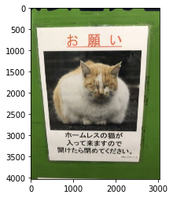
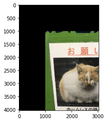
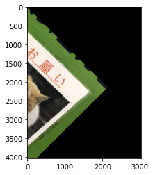

本記事はQrunchからの転載です。
アフィン変換といえば、普通は2次元上の点や図形を拡大縮小したり、回転したり、平行移動したりといった変換をさします。 式の話をすると、ある2次元上の点$(x,y)$の$(x’, y’)$へのアフィン変換は次のようにして表現できます。 $$\begin{pmatrix}x’ \\ y’ \\ 1 \end{pmatrix} =\begin{pmatrix} a & b & c\\ e & f & g \\ 0 & 0 & 1 \end{pmatrix} \begin{pmatrix}x \\ y \\ 1 \end{pmatrix}. $$ $a,b,e,f$の値によって拡大縮小、回転をおこなうようにできますし、$c,g$の値によって平行移動が可能です。
今回はこのアフィン変換をOpenCVを使っておこないます。
アフィン変換のやり方
OpenCVでは次のようにしてアフィン変換をおこないます。
transformed_img = cv2.warpAffine(img, affine_mat, (width, height))
affine_matとしているのが、アフィン変換で用いる行列です。 widthとheightは変換後の画像のサイズになります。
以下では次の画像に対するアフィン変換の例を示します。 
平行移動
平行移動をするときは次のようなアフィン変換になります。 $$\begin{pmatrix}x’ \\ y’ \\ 1 \end{pmatrix} =\begin{pmatrix} 1 & 0 & c\\ 0 & 1 & g \\ 0 & 0 & 1 \end{pmatrix} \begin{pmatrix}x \\ y \\ 1 \end{pmatrix}. $$ もう少し式を書きくだせば、 $$\begin{eqnarray}x’ &=& x + c, \\y’&=&y+g\end{eqnarray}$$ となるので、平行移動だとわかりますね。
$x$と$y$を1000ずつ動かすとすると、コードでは次のようになります。
affine_mat = np.array([[1, 0, 1000], [0, 1, 1000]], dtype=np.float)
transformed_img = cv2.warpAffine(img, affine_mat, (width, height))

拡大・縮小
拡大・縮小をするときは次のようなアフィン変換になります。 $$\begin{pmatrix}x’ \\ y’ \\ 1 \end{pmatrix} =\begin{pmatrix} a & 0 & 0\\ 0 & e & 0 \\ 0 & 0 & 1 \end{pmatrix} \begin{pmatrix}x \\ y \\ 1 \end{pmatrix}. $$ もう少し式を書きくだせば、 $$\begin{eqnarray}x’ &=& ax \\y’&=&ey\end{eqnarray}$$ となるので、縮小だとわかりますね。
大きさを半分にする場合は次のようなコードになります。
affine_mat = np.array([[.5, 0, 0], [0, .5, 0]], dtype=np.float)
transformed_img = cv2.warpAffine(img, affine_mat, (width, height))

回転
$\theta$だけ回転をするときは次のようなアフィン変換になります。 $$\begin{pmatrix}x’ \\ y’ \\ 1 \end{pmatrix} =\begin{pmatrix}\cos\theta & -\sin \theta & 0\\ \sin \theta & \cos \theta & 0 \\ 0 & 0 & 1 \end{pmatrix} \begin{pmatrix}x \\ y \\ 1 \end{pmatrix}. $$ これでなぜ回転になるかわからない方は回転行列などでぐぐってください。 45度時計回りに回転させるときのコードは以下のようになります。
affine_mat = np.array([[1 / 1.4142, -1 / 1.4142, 0],
[1 / 1.4142, 1 / 1.4142, 0]],
dtype=np.float)
transformed_img = cv2.warpAffine(img, affine_mat, (width, height))
